1904 to 1906
Robert Guérin
France
A sports journalist for Le Matin. Travelled to London to persuade the Football Association to join, and was told the idea was not worth discussing.
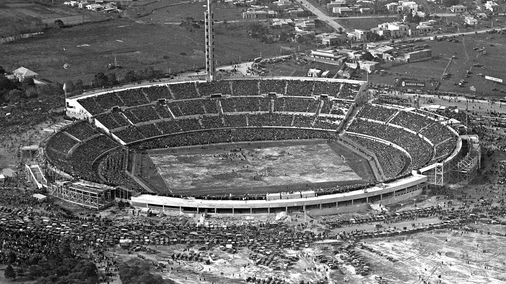
Founded 21 May 1904, Paris
Seven European associations signed a charter in a back room on rue Saint-Honoré. Today FIFA governs 211 of them.
Start in 1904On 21 May 1904, delegates from seven national associations met at 229 rue Saint-Honoré in Paris, in rooms at the back of the Union Française de Sports Athlétiques. They signed a founding charter for the Fédération Internationale de Football Association and elected a 28 year old French journalist, Robert Guérin, as its first president.
The body they created had almost no power. The laws of the game belonged to the International Football Association Board in Britain, and Britain had declined to attend. Germany joined the same day by telegram without sending anyone. For its first quarter century FIFA had no tournament of its own and borrowed the Olympic football competition as its shop window.
England relented and joined in 1905. Daniel Burley Woolfall replaced Guérin the following year, and the federation began the slow work that would define it: signing up associations one at a time, and arguing about who was allowed to be paid.
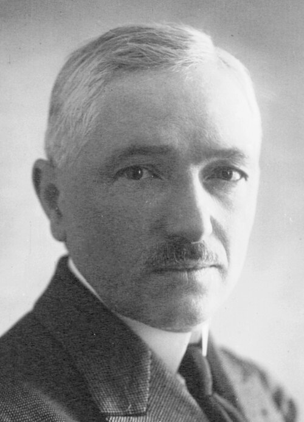
The rules of football belong to the International Football Association Board, a body older than FIFA itself. Four British associations founded it in 1886 to stop England, Scotland, Wales and Ireland playing four slightly different games. FIFA was not admitted until 1913.
The arrangement that resulted is unusual and has survived every reform of the last century. IFAB holds eight votes. England, Scotland, Wales and Northern Ireland hold one each. FIFA holds the other four, representing every one of its 211 members put together. Changing a single line of the Laws of the Game requires six of those eight votes.
The arithmetic is deliberate. FIFA cannot change the laws on its own, and the four British associations cannot either. Anything that alters how football is played has to be agreed across both blocs, which is why the offside law moves slowly and why every technology added to the game arrived through IFAB rather than through Zurich.
IFAB vote share
6 of 8 votes carry a change to the Laws.
4 votes for FIFA, on behalf of 211 associations.
4 votes for the four British associations.
Neither bloc can act alone.
No association deals with FIFA directly for most things. Continental bodies run their own qualifying competitions, their own club tournaments and their own politics, and each one controls a bloc of votes at the FIFA Congress.
Founded 1916
South America, 10 members
The oldest confederation, older than every other by 38 years. Ten members between them have won the World Cup nine times.
Founded 1954
Europe, 55 members
The largest revenue of any confederation, and the bloc whose objections shaped and then failed to stop the expansion of the finals.
Founded 1954
Asia, 46 members
Founded in Manila the same year as UEFA. Stretches from Lebanon to Australia, which transferred from Oceania in 2006.
Founded 1957
Africa, 54 members
Formed with four members, three of whom played the first Cup of Nations. Its votes ended Stanley Rous's presidency in 1974.
Founded 1961
North and Central America and the Caribbean, 35 members
A merger of the North American and Central American bodies. Its former leadership was at the centre of the 2015 indictments.
Founded 1966
Oceania, 11 members
The smallest, and the only one that had never sent a team to a World Cup by direct qualification until the finals expanded to 48.
Counts are FIFA members only. Confederations also admit associations that FIFA does not, which is why their own membership figures run slightly higher.
FIFA is a Swiss association, which is the same legal form as a local hiking club. Its structure is four layers deep and each layer is smaller and less accountable than the one above it.
211
Members, one vote each
The supreme body. Every member association has one vote regardless of size, so Gibraltar counts exactly as much as Brazil. It elects the president, admits and expels members, amends the statutes and, since the 2016 reforms, chooses World Cup hosts. It meets once a year.
37
Council members
Replaced the Executive Committee in 2016. It sets strategy between Congresses. Members are elected by their own confederations rather than by the Congress, which is why confederation politics decide so much of what FIFA does. At least one seat per confederation is reserved for a woman.
1
Secretary general
The administration that actually runs the tournaments, the money and the regulations, staffed by several hundred employees in Zurich. Nobody elects it. The 2016 reforms were meant to draw a hard line between this operational side and the political side above it.
3
Independent committees
The Ethics Committee is split into an investigatory chamber and an adjudicatory one so that the body bringing a case is not the body deciding it. Alongside it sit Audit and Compliance, and Governance. Their chairs are meant to be independent of the Council, which is the single most important sentence in the reform statutes and the hardest to verify from outside.
Drag or scroll the rail sideways.
1904 to 1906
France
A sports journalist for Le Matin. Travelled to London to persuade the Football Association to join, and was told the idea was not worth discussing.
1906 to 1918
England
Brought Britain inside and put FIFA in charge of the Olympic football tournament from 1908. Died in office during the First World War.
1918 to 1921
Caretaker period
Dutch secretary Carl Hirschman kept the federation alive from Amsterdam, largely at his own expense, while Europe fought and then rebuilt.
1921 to 1954
France
The longest presidency in FIFA history. Membership grew from 20 associations to 85, and he pushed through the World Cup against sustained European resistance.
1954 to 1955
Belgium
A lawyer and former international who had served as vice president for decades. He died sixteen months after taking the top job.
1955 to 1961
England
A fish merchant from Grimsby who ran both the Football League and FIFA. Presided over the arrival of the European Cup and the first African members.
1961 to 1974
England
Rewrote the laws of the game as a referee, then lost the presidency after refusing to expel South Africa quickly enough for the African and Asian blocs.
1974 to 1998
Brazil
Won by promising African and Asian members more places at the World Cup, then paid for it with sponsorship. The finals grew from 16 teams to 32.
1998 to 2015
Switzerland
Took the World Cup to Asia and Africa for the first time. Announced his resignation four days after his fifth election, as US indictments landed.
2016 to present
Switzerland
Elected on a reform platform in February 2016. Expanded the men's finals to 48 teams and moved FIFA's commercial operations toward a year round calendar.
Seven eras
1904 to 1928
A federation with a constitution, a subscription fee and no competition. FIFA ran the Olympic football tournament, fought with Britain over broken time payments, and watched its founders leave and rejoin around the war.
1930 to 1938
Uruguay built the Estadio Centenario and hosted thirteen teams. Four European sides made the boat crossing. Uruguay beat Argentina 4 goals to 2 on 30 July 1930, and the competition FIFA had argued about for a decade finally existed.
1946 to 1970
The trophy was renamed for Jules Rimet, the British associations came back, and television turned the finals into a shared event. Brazil won a third title in 1970 and kept the trophy for good, exactly as the rules allowed.
1974 to 1998
João Havelange arrived with a mandate from the associations Europe had ignored. Adidas and Coca-Cola funded the expansion, the finals grew from 16 teams to 32, and FIFA turned from a members club into a rights holder.
1991 to 2019
The first Women's World Cup was played in China in November 1991 and won by the United States. Within a generation it had gone from an event FIFA hesitated to name to one watched by more than a billion people.
2015 to 2018
Swiss police arrested officials in a Zurich hotel on United States warrants in May 2015. Fourteen people were charged. Sepp Blatter went, term limits and salary disclosure arrived, and the vote on hosting rights was taken away from the executive committee and given to every member.
2022 to 2026
Qatar staged a winter World Cup, then North America staged the first with three hosts and 48 teams. Spain beat Argentina 1 goal to 0 after extra time at MetLife Stadium on 19 July 2026, and became the first country to hold the men's and women's titles at once.
For its first twenty six years FIFA had no tournament. It ran football at the Olympic Games instead, and that arrangement collapsed over a question nobody could answer politely.
The quarrel
The Olympic movement admitted amateurs. By the 1920s the best players in South America and central Europe were being paid, openly or otherwise, and the countries that paid them had to choose between fielding their best teams and staying eligible.
Britain withdrew from FIFA over broken time payments, the compensation given to players for wages lost while representing their country. FIFA's position was that a world championship had to include professionals. The International Olympic Committee's position was that it could not. Neither moved.
So FIFA built its own tournament. The 1930 World Cup was the direct product of that deadlock, and football was dropped from the 1932 Los Angeles Olympics entirely.
The settlement
Professionals were admitted to the Olympic tournament in stages from 1984. The compromise that stuck arrived in 1992: the men's competition became an under 23 event, with three players over that age allowed per squad from 1996.
That keeps the two tournaments from competing. The Olympic men's title is a development competition with a handful of senior players in it, and the World Cup remains the thing every association actually wants.
The women's tournament carries no age limit. It has been contested by full national teams since it was introduced in 1996, which makes an Olympic gold and a World Cup roughly comparable in the women's game and not at all comparable in the men's.
The first prize was a gold plated statuette of Nike, the Greek goddess of victory, commissioned in 1929 and renamed for Jules Rimet in 1946.
It was stolen from a public exhibition in Westminster in March 1966, four months before England hosted the finals. A dog called Pickles found it wrapped in newspaper under a hedge in south London a week later. Brazil won a third title in 1970 and, under the original rules, kept it permanently. It was stolen again from the Brazilian federation's offices in Rio de Janeiro in December 1983 and has never been recovered.
The replacement was designed by the Italian sculptor Silvio Gazzaniga and first presented in 1974. Two figures hold up the earth. Winners keep a gold plated replica, and the original returns to Zurich.
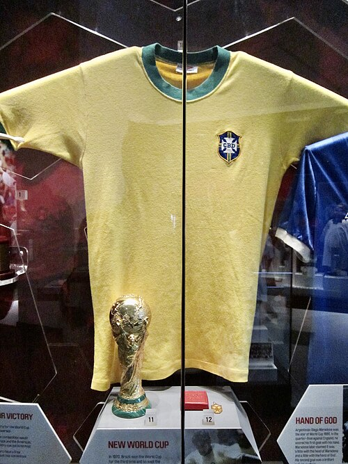
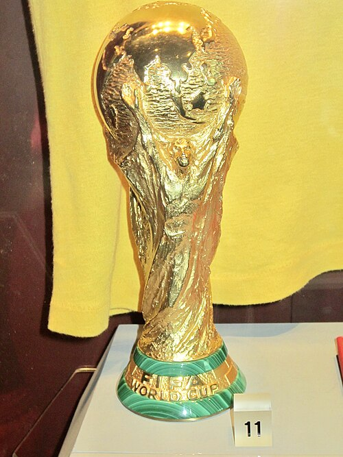
Drag or scroll the rail sideways.
1970
Mexico
Thirty two panels in black and white, chosen so the ball would still read as a sphere on a black and white television set. The first Adidas ball, and the pattern most people still draw when asked to draw a football.
1978
Argentina
Twenty interlocking triads printed to suggest twelve circles. The design lasted, in one revision or another, for the next five tournaments.
1986
Mexico
The first fully synthetic ball at a World Cup. Leather absorbed water and got heavier through a match. This one did not.
2006
Germany
Fourteen panels rather than thirty two, thermally bonded instead of stitched, which removed the seams and made the surface far smoother.
2010
South Africa
Eight panels, and the most complained about object in the tournament's history. Goalkeepers said it moved unpredictably in flight. The following ball had a rougher surface and more seam length.
2014
Brazil
Six panels with deep seams, tested for two years by clubs and national teams before release. The complaints stopped.
2022
Qatar
The first World Cup ball with a sensor inside it, reporting its position five hundred times a second. That feed is what let semi automated offside decisions be made in seconds rather than minutes.
Miroslav Klose's sixteen goals had stood since 2014. In the summer of 2026 Lionel Messi passed it, reaching twenty one. Two weeks later Kylian Mbappé passed him.

First, and the current record
22
Four in 2018, eight in 2022, ten in 2026. He also holds the record for goals scored in World Cup finals, with four, three of which came in a single match against Argentina in 2022 on the losing side. He is the first player to win the Golden Boot twice.

Second
21
Held the record for two weeks in 2026, across six World Cups and twenty years.
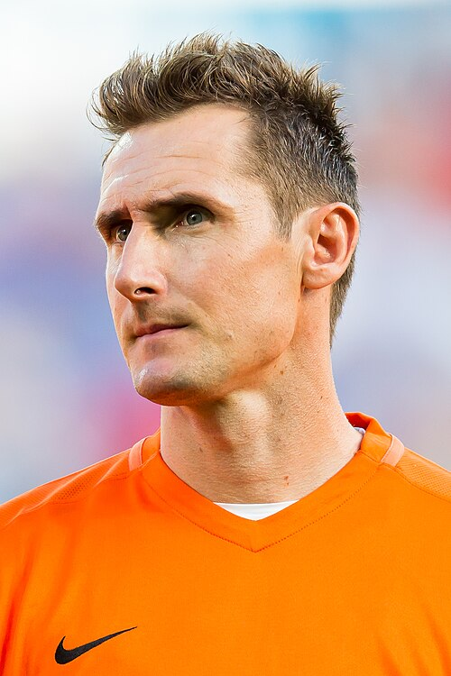
Third
16
Scored in four tournaments and never took a penalty to do it.
 RonaldoBrazil, 1998 to 2006
15
RonaldoBrazil, 1998 to 2006
15
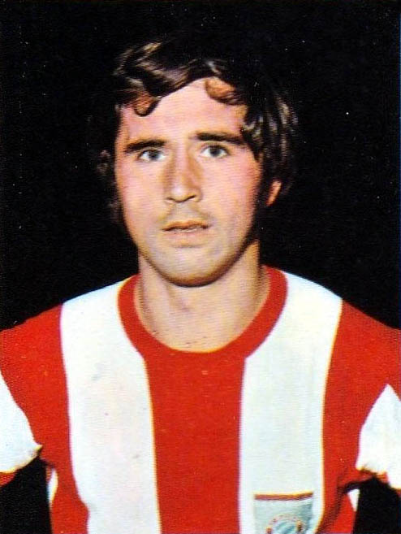
Gerd MüllerWest Germany, 1970 to 1974 14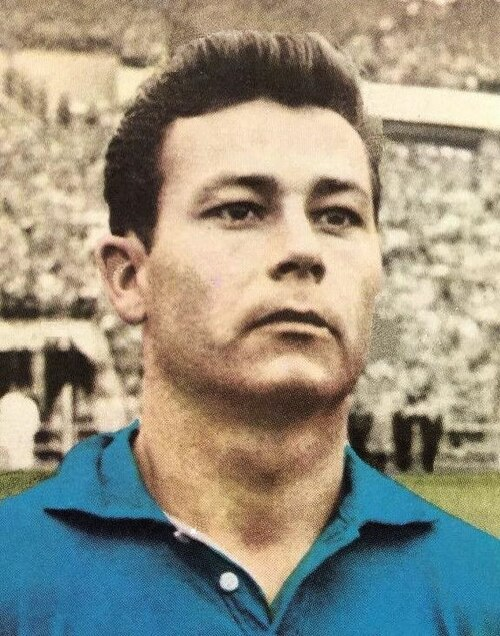
Just FontaineFrance, 1958 only 13 PeléBrazil, 1958 to 1970
12
PeléBrazil, 1958 to 1970
12
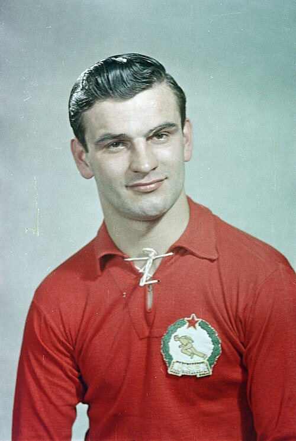
Sándor KocsisHungary, 1954 only 11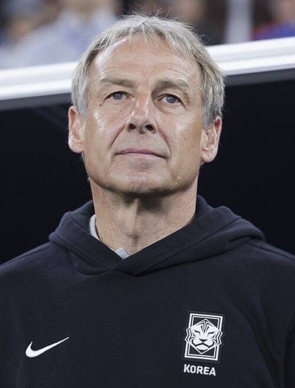
Jürgen KlinsmannGermany, 1990 to 1998 11Six more players share tenth place on ten goals apiece, among them Gabriel Batistuta, Gary Lineker and Teófilo Cubillas.
Most in one tournament
13
Just Fontaine, in six matches in 1958. Seventeen tournaments have passed without anyone approaching it.
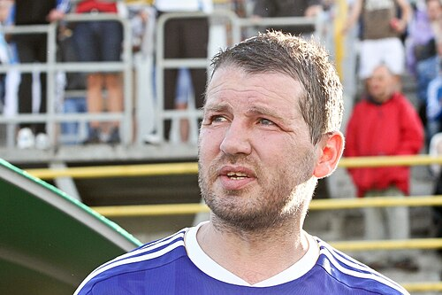
Most in one match
5
Oleg Salenko against Cameroon in 1994. Russia went out in the group stage and he still shared the Golden Boot.
The first one ever
1930
Lucien Laurent, France against Mexico, on the opening day. He was a factory worker at Peugeot and took unpaid leave to travel.
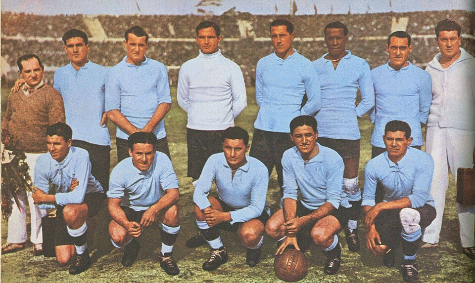
Goals in 23 tournaments
3000
More than three thousand, shoot outs excluded. Around 1,300 players have scored one, and 111 have scored five or more.
1954
Austria beat Switzerland 7 goals to 5 in a quarter final played in extreme heat in Lausanne. The Austrian goalkeeper was suffering from sunstroke and reportedly remembered almost nothing about the second half.
1974
Carlos Caszely of Chile, against West Germany. Red and yellow cards had been introduced at the previous tournament in 1970, and it took four more years before anyone was actually shown a red one.
1982
Norman Whiteside played for Northern Ireland at seventeen years and forty one days, which remains the record. At the same tournament Hungary beat El Salvador 10 goals to 1, still the largest winning margin in the competition's history.
2002
Hakan Şükür scored for Turkey against South Korea in the third place play off before most of the crowd had settled. It is the fastest goal ever scored at a World Cup and it was his only goal of the tournament.
2018
Essam El Hadary kept goal for Egypt at forty five years and one hundred and sixty one days, saved a penalty, and lost. It was Egypt's first World Cup in twenty eight years, and after a twenty two year international career it was the first World Cup match he had ever played.
30 July 1930
Thirteen teams, one host, and a stadium finished days before kick off. Uruguay beat Argentina in front of a crowd that had queued since dawn. FIFA stopped being an administrative body and became the owner of an event.
27 March 1966
Taken from a stamp exhibition in central London while guards were elsewhere. The Football Association received a ransom demand. A week later a dog found the trophy in a suburban garden, and FIFA quietly commissioned a replica it never publicly acknowledged.
11 June 1974
João Havelange beat Stanley Rous by counting votes Europe had never bothered to court. He had promised more World Cup places to Africa and Asia, and a youth tournament, and coaching programmes. Sponsorship paid for all of it.
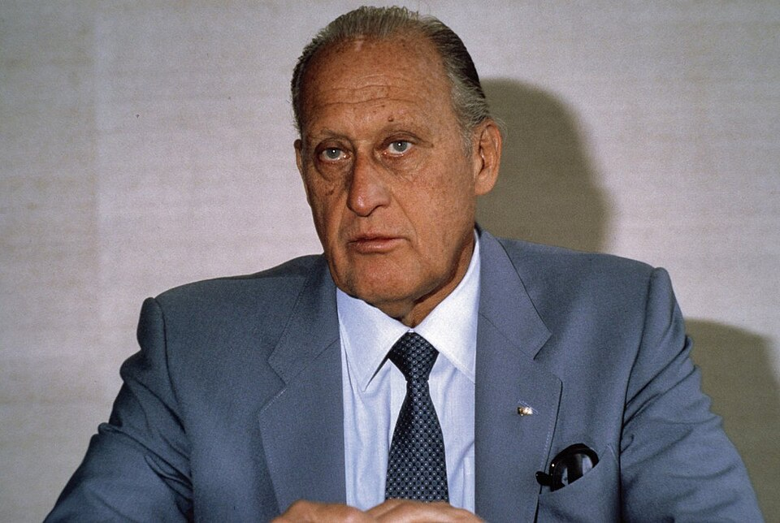
27 May 2015
Swiss police entered the Baur au Lac hotel before dawn and led officials out through a side door, holding bedsheets in front of the cameras. The United States Department of Justice charged fourteen people. Sepp Blatter was re elected two days later and resigned four days after that.
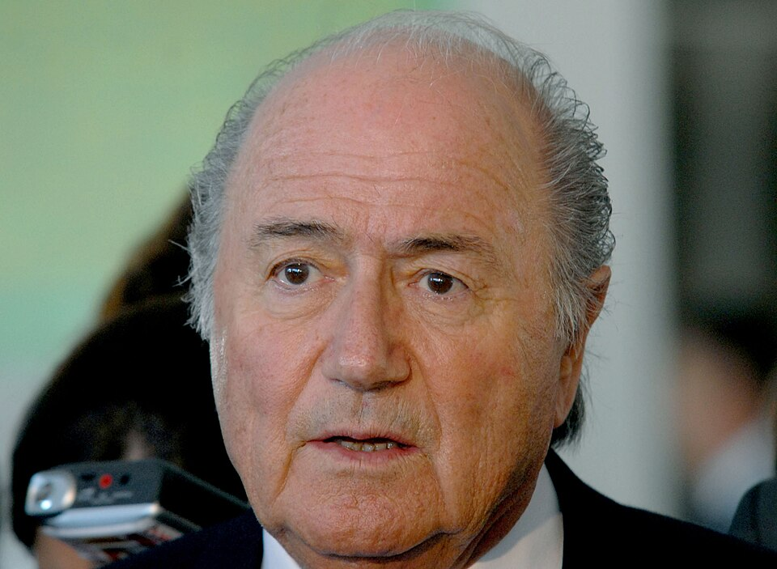
The vote that changed
Until 2016
Hosting rights were awarded by the FIFA Executive Committee, a body of around two dozen people. On 2 December 2010 that committee awarded two tournaments in a single session, sending 2018 to Russia and 2022 to Qatar.
Two members had already been suspended before the vote took place. The decision became the single most examined act in FIFA's history and sat underneath everything that happened in 2015.
Since 2016
The reform statutes moved the decision to the FIFA Congress, where every member association has one vote and the result is published association by association. A bid must also pass a published technical evaluation and a human rights assessment before it reaches the floor.
The first host chosen this way was the 2026 tournament, awarded in Moscow in June 2018 to the joint Canadian, Mexican and United States bid by 134 votes to 65 over Morocco.
The most consequential decision FIFA makes between tournaments is how many places each confederation gets. Havelange won the presidency in 1974 by promising to change these numbers, and they have moved in one direction ever since.
16 places
Was 13 of 32
Still the largest allocation and still the smallest share it has ever had. Europe held more than half the places at some early tournaments.
9 places
Was 5 of 32
Africa had no guaranteed place at all until 1970, which is why its associations boycotted the 1966 tournament entirely.
8 places
Was 4 and a half
Half places are real. A team finishing in a designated slot enters an inter confederation play off rather than qualifying outright.
6 places
Was 4 and a half
Ten members competing for six places, the highest ratio of any confederation. Its qualifying group is a single league where everyone plays everyone twice.
6 places
Was 3 and a half
Three of the six went automatically to Canada, Mexico and the United States as hosts in 2026, leaving three to be won.
1 place
Was half a place
Oceania got its first guaranteed place in the 48 team format. Before that its champion had to beat a team from another continent to get in, and usually did not.
Those six total forty six. The last two places went to a six team play off tournament staged in the host countries in the months before the finals.
1930
John Langenus of Belgium refereed the first World Cup final in plus fours, a jacket and a tie, and asked for a guarantee of safe passage out of the country before agreeing to take the match. Referees were drawn from the participating nations, so officials frequently ran matches involving their neighbours.
For decades the job was amateur in the literal sense. Officials had other employment, paid their own way to tournaments in some cases, and were appointed with little published reasoning.
Now
Referees are selected years ahead by FIFA's Referees Committee, tested on fitness and on the languages spoken by the teams they may be assigned, and monitored across their domestic seasons. Video officials form a second team working from a central room.
In 2022 Stéphanie Frappart became the first woman to referee a men's World Cup match, taking Germany against Costa Rica with an entirely female team of officials. She had already refereed a men's Champions League match three years earlier.
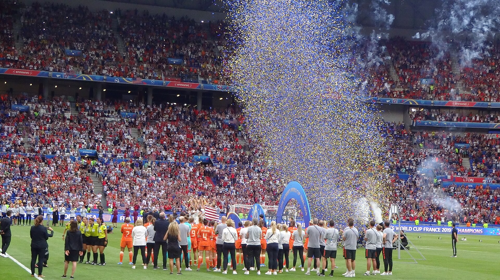
Women's football drew crowds of more than fifty thousand in England in the years after the First World War. In 1921 the Football Association banned it from member grounds, calling the game unsuitable, and most European federations followed. The ban in England stood until 1971.
FIFA staged an invitational tournament in 1988 to test whether anyone would come. Enough did. The first Women's World Cup was played in Guangdong in November 1991, and the United States beat Norway 2 goals to 1 in the final in front of 63,000 people.
The 2019 edition in France was watched by more than a billion people across the tournament, and the 2023 edition in Australia and New Zealand was the first with 32 teams. Prize money, broadcast deals and the pay disputes that came with them are now a permanent part of FIFA's agenda.
From 1977
Every two years
The tournament that first showed Maradona, Messi and Pogba to a world audience. Won more often by Argentina than by anyone else.
From 1985
Every two years, annual from 2025
Age verification has been its persistent problem. FIFA introduced wrist bone scanning to check declared ages after repeated disputes.
From 1989
Five a side, indoors
Brazil and Spain have won all but two editions. Futsal is where a large share of Brazilian and Portuguese players learn close control.
1997 to 2017
Discontinued
Continental champions plus the hosts, staged the year before a World Cup as a dress rehearsal for the venues. Retired when the Club World Cup expanded.
From 2000
Expanded to 32 teams in 2025
A minor fixture for two decades, then rebuilt as a month long tournament in the United States. European clubs resisted it and entered anyway.
From 2005
Taken over by FIFA in 2005
Played five a side on sand in three twelve minute periods. Every match must produce a winner, so draws go to extra time and then penalties.
None of this was FIFA's to decide alone. Each addition below went through IFAB and needed six votes out of eight before a referee could use it.
1966
England's third goal in the final either crossed the line or did not, and film of it settled nothing. The argument ran for the next forty six years without any way to resolve it.
2012
IFAB admitted goal line systems into the Laws in July 2012, after a shot by Frank Lampard crossed the line by a clear margin at the 2010 World Cup and was not given. First used at a World Cup in Brazil in 2014.
2018
Written into the Laws in March 2018 after two years of live trials, and used at a World Cup for the first time three months later in Russia. It reviews four things only: goals, penalties, straight red cards, and mistaken identity.
2022
Twelve cameras tracking twenty nine points on every player, combined with the sensor inside the match ball, producing an offside line without a human drawing it. Decisions that took three minutes started taking twenty seconds.
Introduced in December 1992 and rebuilt twice since, because the first two versions produced results that made no sense to anyone who watched football.
1992
Introduced
A simple points average. It rewarded playing often and punished playing strong opponents, so teams learned to schedule easy friendlies and climb.
2018
Rebuilt on Elo
Switched to the rating system used in chess. Points move between the two teams after every match based on the result and the gap between them, which makes a cheap friendly worth almost nothing.
4
Top four in the 2026 semifinals
For the first time, the four highest ranked teams in the world all reached the last four: Argentina, Spain, France and England. The ranking had never predicted a tournament that cleanly before.
The part of FIFA's work that touches the most people has nothing to do with tournaments. It is a registration system, and it decides who is allowed to sign for whom.
1995
A Belgian midfielder took his club to the European Court of Justice and won. Out of contract players inside the European Union became free to move without a fee, and limits on how many European players a club could field were struck down. FIFA had to rewrite its regulations around a ruling it had no part in.
2001
The settlement with the European Commission introduced fixed transfer windows, contract stability rules, and payments back to the clubs that developed a player before the age of 23.
2010
Every international transfer must be entered by both clubs into FIFA's Transfer Matching System, with the contract, the fee and the payment schedule. Nothing completes unless the two entries agree. It exists because they frequently did not.
2022
Five percent of every transfer fee is owed to the clubs that trained the player between the ages of twelve and twenty three. Most of it never reached them, so FIFA now routes the payments itself rather than trusting clubs to send them.
Where it stands
Member associations
211
More than the United Nations has member states. Six continental confederations sit between them and Zurich.
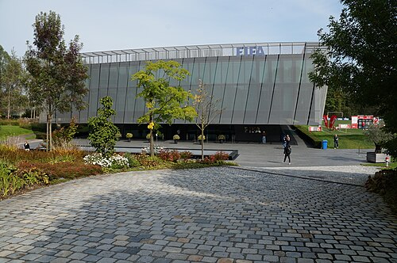
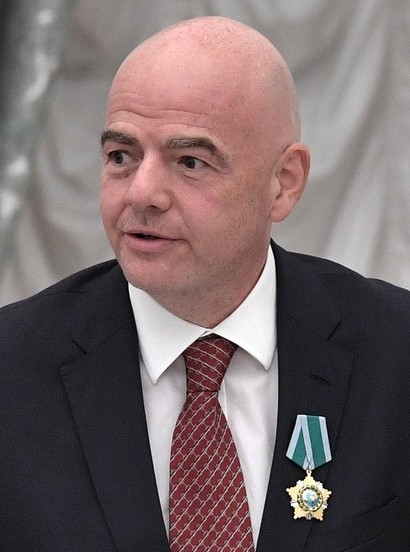
What changed after 2015
The 2026 finals, concluded 19 July
48
teams
104
matches
3
host nations
16
host cities
The largest tournament FIFA has staged, and the first with three hosts. Spain beat Argentina 1 goal to 0 after extra time at MetLife Stadium, becoming the first country to hold the men's and women's world titles at the same time. Kylian Mbappé finished as top scorer for the second time running and is now the World Cup's all time leading goalscorer. Every tournament, 1930 to 2026.
The accounts
FIFA sells almost nothing directly. It sells the right to broadcast and the right to advertise, and it sells both in four year blocks built around one tournament.
7.6bn
Revenue, 2019 to 2022 cycle
In United States dollars. Television rights are the largest single line, followed by marketing rights, then licensing, hospitality and ticketing.
1
Year in four that matters
The great majority of a cycle's income lands in the year of the men's World Cup. FIFA runs at a loss for most of the intervening period and holds reserves specifically to absorb that.
8m
Available per association, per cycle
The Forward programme returns money to every member. For a great many associations it is the difference between running a national league and not running one, which is also why incumbents are hard to remove.
Nothing in the index matches that
The record runs from 1886 to 2026. Try a four digit year, a surname, or one of the tags: founding, structure, competition, trophy, leadership, expansion, equipment, technology, transfers, crisis, reform.